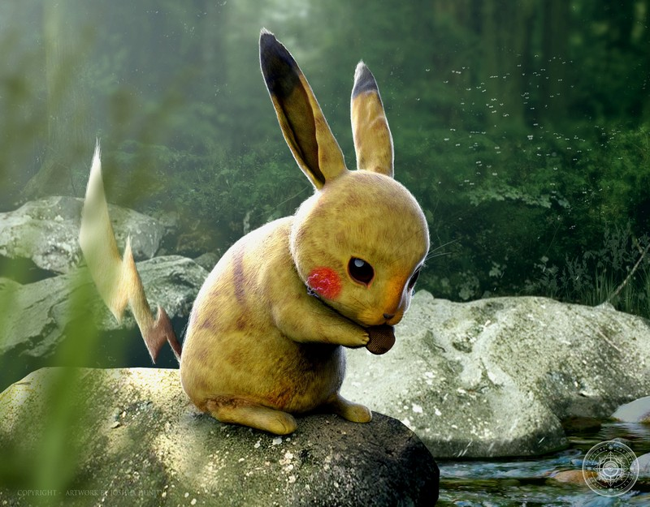
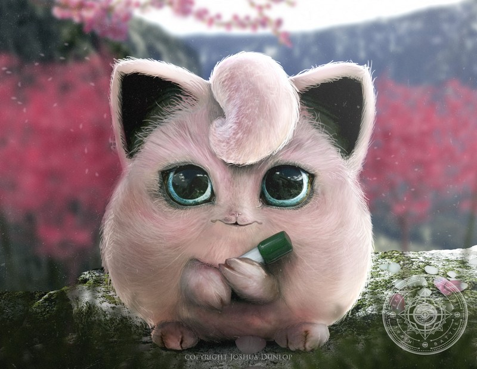
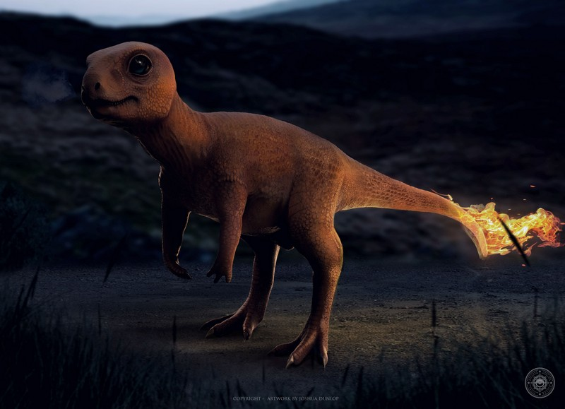
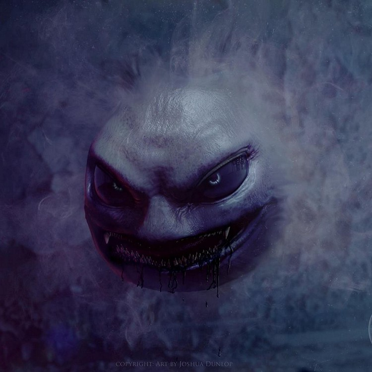
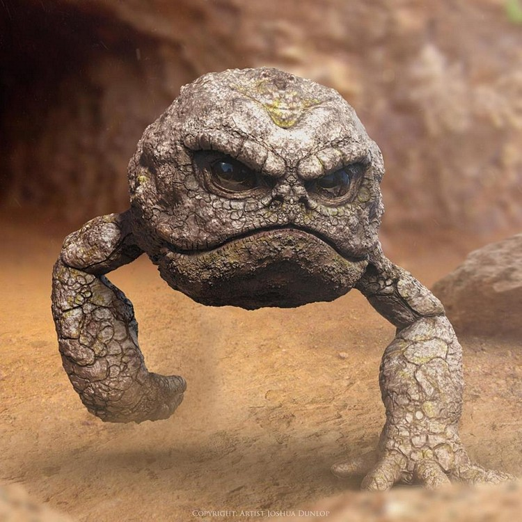
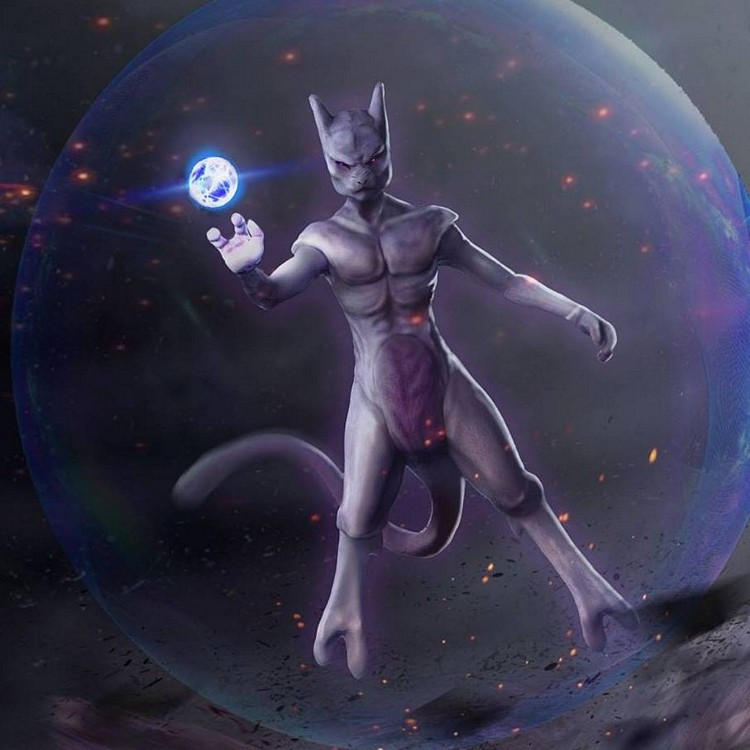

|  |
PikachuPikachu é um Pokémon tipo elétrico. Ele é a forma evoluida de Pichu quando chega num certo ponto de amizade com o treinador e evolui para Raichu quando esta segurando uma Thunder Stone. |
|  |
JigglypuffJigglypuff é um Pokémon dos tipos Normal e Fada, categorizado como Pokémon Balão e introduzido na Primeira Geração.
É a forma evoluída de Igglybuff. |
 |
PsyduckPsyduck é um Pokémon tipo Água e Psíquico. |
 |
BulbasaurBulbassauro ou Bulbasaur é um Pokémon dos tipos Grama e Venenoso. Venenoso introduzido na Primeira Geração.
É um dos três Pokémon iniciais da região de Kanto. |
 |
SquirtleSquirtle é um Pokémon do tipo Água, categorizado como Pokémon Tartaruguinha e introduzido na Primeira Geração. |
|  |
CharmanderCharmander é um Pokémon do tipo Fogo introduzido na Primeira Geração.
É um dos três Pokémon iniciais da região de Kanto. |
|  |
GastlyGastly é um Pokémon dos tipos Fantasma e Venenoso introduzido na Primeira Geração.
Evolui para Haunter a partir do nível 25, que evolui para Gengar via troca. |
|  |
GeodudeGeodude é um Pokémon Rocha e Terra de tipo duplo introduzido na Geração I.
Ele evolui para Graveler a partir do nível 25, que evolui para Golem quando trocado ou quando exposto a um Linking Cord.
|
 |
MewMew é um Pokémon Mítico do tipo Psíquico, categorizado como Pokémon Nova Espécie e introduzido na Primeira Geração. |
|  |
MewThoMewtwo é um Pokémon Lendário do tipo Psíquico introduzido na Geração I.Embora não seja conhecido por evoluir para ou de qualquer outro Pokémon, Mewtwo pode Mega Evoluir em duas formas diferentes:
Mega Mewtwo X.
Mega Mewtwo Y. |